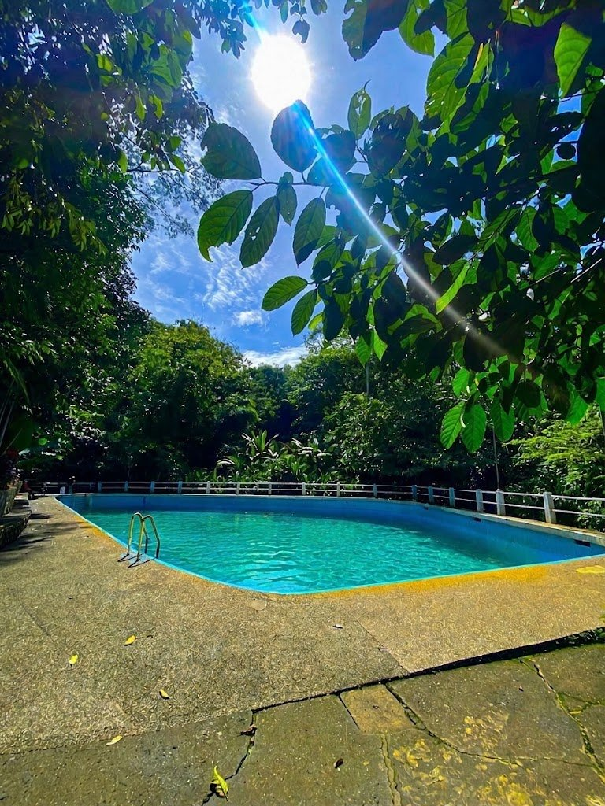
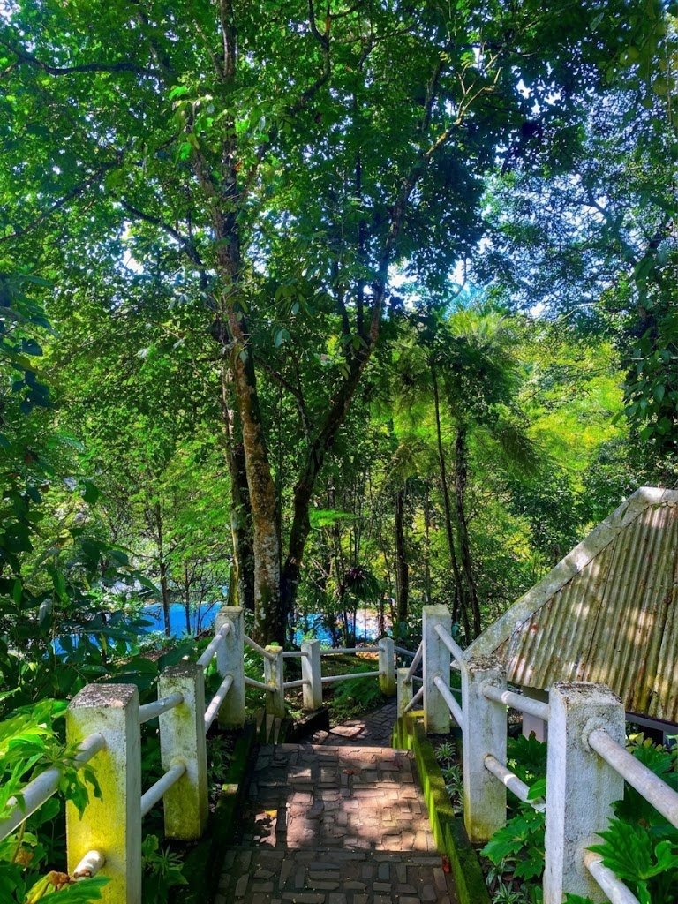
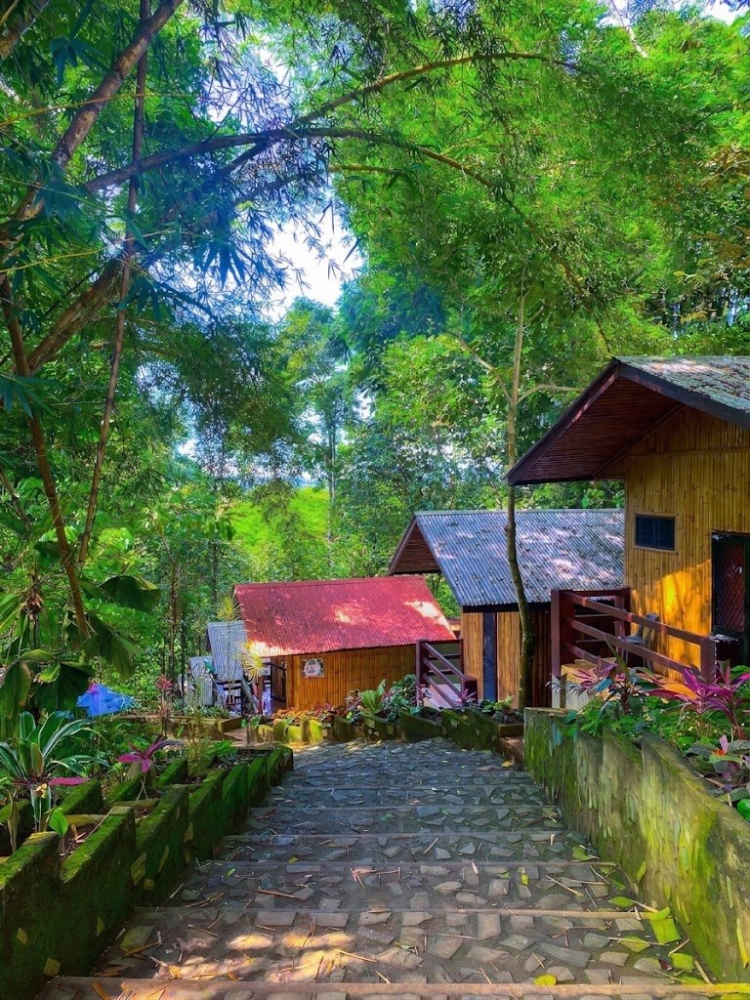
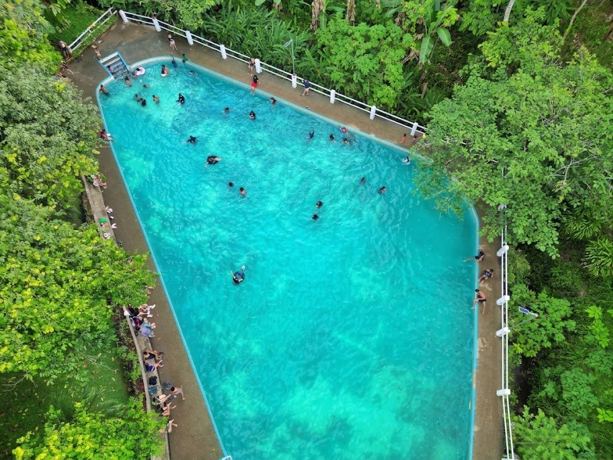

Janopolan Nature's Spring
Claveria's classic spring & pool eco-tourism retreat





About Janopolan Nature's Spring
Janopolan Nature's Spring and Pool is one of Claveria's most well-established and deeply rooted public eco-tourism retreats — long before the boutique cabin boom, it served as the original weekend escape for families and travelers looking to experience the raw, natural cooling power of the Misamis Oriental highlands.
Location
Directions on Google Maps
Explore the area
Sitio Janopolan, Barangay Poblacion, Claveria, Misamis Oriental
Pan or zoom to explore. Use Google Maps for turn-by-turn directions. Map data © OpenStreetMap contributors.
More staycations & resorts in Claveria
 5 photos
5 photosBaqs&Bonfires
Exclusive mountain campground with bonfire nights Sitio Sumpong, Brgy. Madaguing, Claveria, Misamis Oriental 5 photos
5 photosVictoria's Haven
Affordable, safe & clean rest house near the Claveria–Gingoog route San Roque, Doalnara, Claveria, Misamis Oriental 5 photos
5 photos